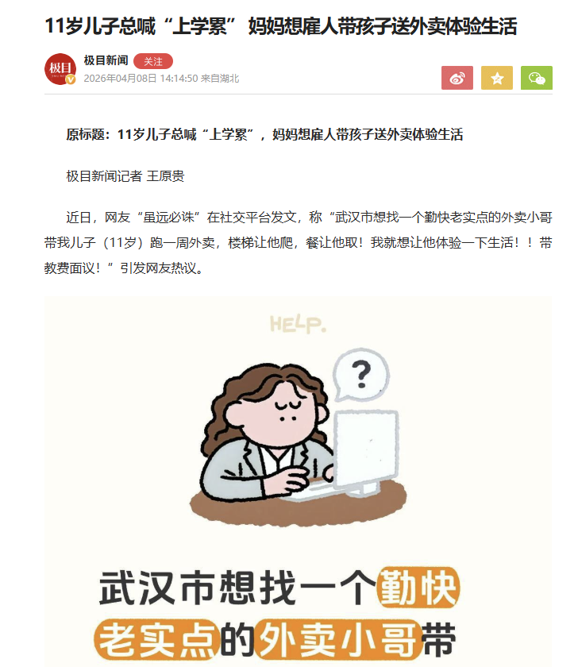

小虚空🍥
@tokerumaisurii
@JCMarkEvo 一大部分小孩（包括我）上学最累的一点就是没有极碎片化的及时正反馈，跑外卖有钱赚是正，劳动散是即时，跑完外卖更不想上学了。

𝓙.𝓒.𝓜𝓪𝓻𝓴🍀
@JCMarkEvo
当小孩儿哥知道跑一单外卖能赚几块钱的时候，上学和外卖就没有可比性了
我老爹也干过类似的，我高二厌学休了半年，然后让我跟着业务员跑业务。当时是一个乍得的两百多吨45#无缝，我还记得0.02466，天天算这些东西（笑。然后还答应给我5%的提成。拿到钱的那一刻直接比上学爽一万倍好吗 https://t.co/PweDPxzqKa